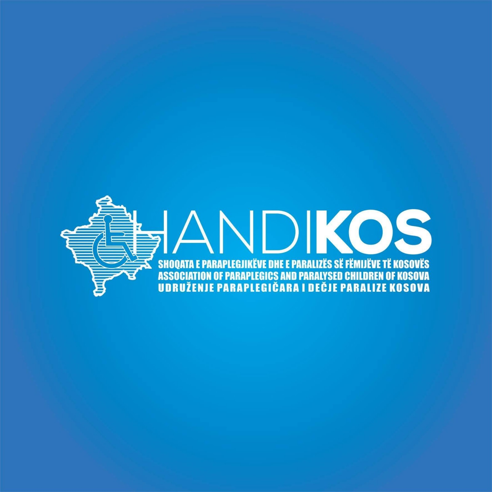
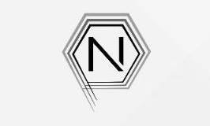
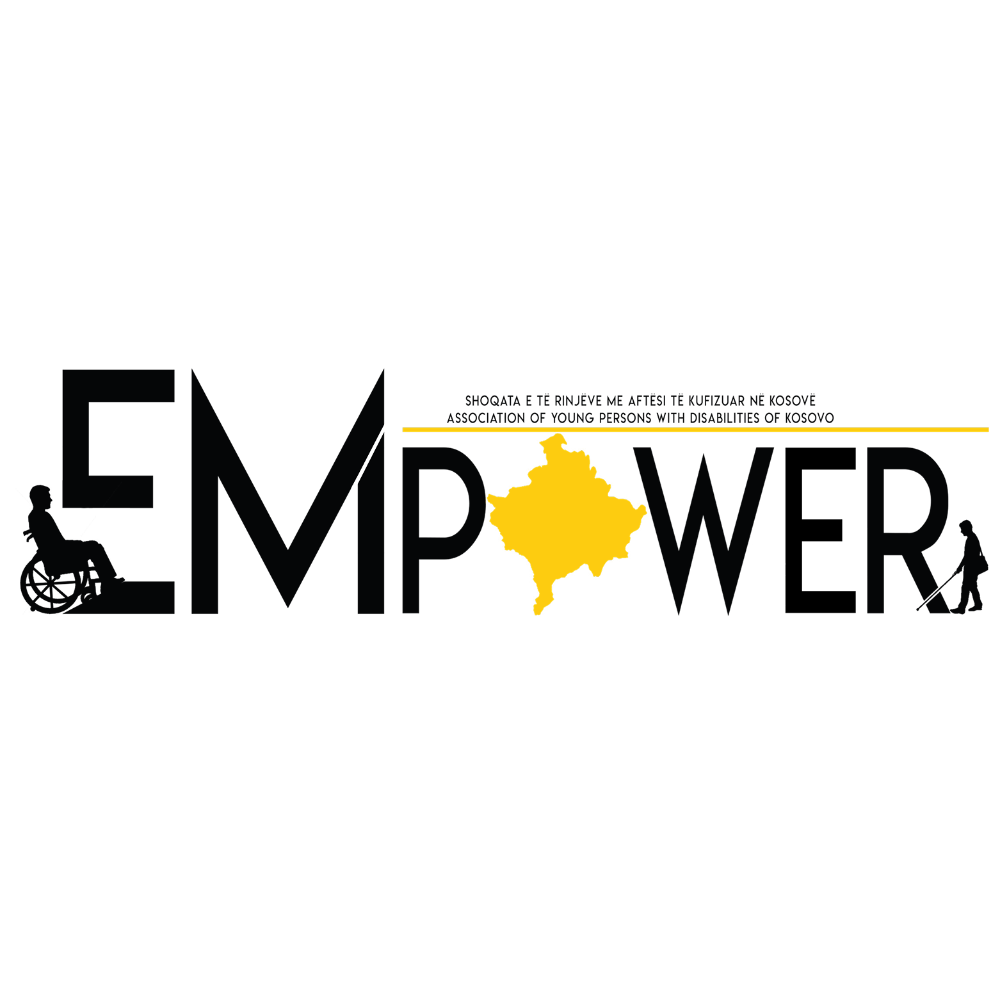

My Works

Handikos-Kaçanik
In 2014-2016 I was a representative of persons with disabilities in "Handikos-Kaçanik".

Nderimi Computers
In 2016, I was the owner and manager of the "Nderimi Computers" sales and service.

EMPOWER
In 2018-present, I founded and am director in the EMPOWER organization in Kaçanik.
Gjirafa
In 2023-present, Am Intern QA Engineer in the Gjirafa in Kosovo.

NTECH-KS
In 2023-present, I founded and am executive director in the NTECH-KS in Kosovo.